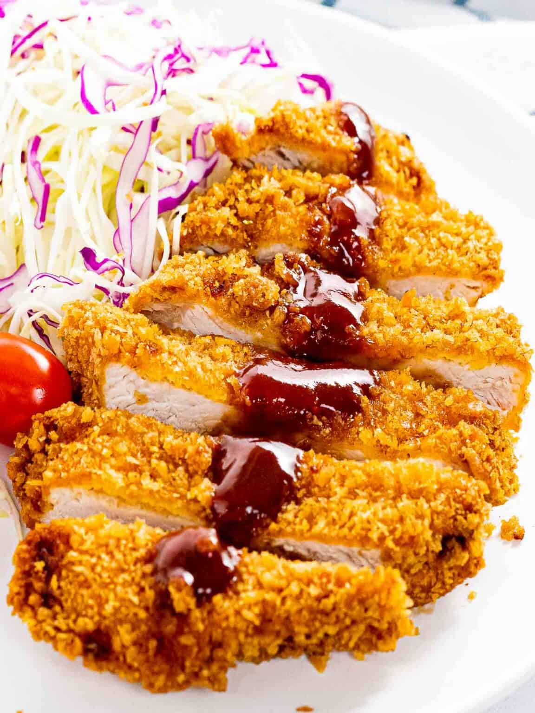

Pork Katsu

This is a recipe that goes well with rice and vegetables.
For Shredded Cabbage Salad:
- 1/4 head green cabbage
- 1 cucumber
- 4 tablespoons Japanese sesame dressing
For the Sesame Dipping Sauce:
- 1 tablespoon toasted white sesame seeds
- 1 tablespoon toasted black sesame seeds
- 4 tablespoons tonkatsu sauce
For the Breading:
- 1/2 cup panko
- 1 large egg
- 1/2 tablespoon neutral oil
- 2 tablespoons all-purpose flour
For the Tonkatsu:
- 2 boneless pork loin chops
- 1/2 teaspoon kosher salt
- 1/8 teaspoon black pepper
- 3 cups neutral oil
Steps to make:
- If you prefer not to deep-fry, see my recipe for Baked Tonkatsu.
- Gather all the ingredients. I highly recommend using fresh panko (called nama panko) from a Japanese grocery store, if available. If you can’t get it, follow my instructions below to make fresh panko using dried panko. Make sure to use a Japanese brand of panko from Japan. Western “panko breadcrumbs” are a bit different from authentic Japanese panko.
To Prepare the Shredded Cabbage:
- To prepare it, shred 1/4 head green cabbage very finely with a sharp knife or slicer. I love to use a cabbage slicer (you can get one from Amazon or JOC Goods) because it saves time and energy! I also thinly slice 1 Japanese or Persian cucumber diagonally, then cut them into thin strips. Toss the cabbage and cucumber together and set aside. Prepare 4 Tbsp Japanese sesame dressing (store bought or make homemade Japanese Sesame Dressing) and keep refrigerated until ready to serve.
To make the Dipping Sauce:
- Grind 1 Tbsp toasted white sesame seeds and 1 Tbsp toasted black sesame seeds. Leave some seeds unground for texture.
- Divide the ground sesame seeds among individual dipping plates or bowls. Then divide 4 Tbsp tonkatsu sauce (store bought or homemade) among them. Set aside until ready to serve.
To Prepare the Fresh Panko and Breading:
- Place 1/2 cup panko (Japanese breadcrumbs) in a deep dish and spray with water until the panko is moist (I use a mister). Set aside for 15 minutes, or until the panko becomes soft and tender.
- Crack 1 large egg into a deep dish or my favorite prep trays. Add 1/2 Tbsp neutral oil and whisk together until well combined. Then, prepare another dish or tray with all-purpose flour (plain flour).
To Prepare the Pork:
- Season both sides with 1/2 tsp Diamond Crystal kosher salt and 1/8 tsp freshly ground black pepper.
To Bread the Pork:
- First, dredge the pork in the flour and dust off any excess. Next, dip the pork into the egg mixture and coat well.
- Dredge the pork in the fresh panko and gently press it to adhere to the cutlet. Gently shake off any excess, then place the breaded cutlets onto a tray or plate. Set them aside for 5–10 minutes to set the breading.
To Fry:
- Add 3 cups neutral oil to a pot.
- Gently put one pork cutlet into the oil and let it cook for 1 minute. Don‘t flip it or touch it for 30 seconds.
- After a minute, flip the pork and cook the other side for 1 minute.
- Remove the pork and let the excess oil drip off by holding the cutlet vertically over the pot for a few seconds. Place it on a wire rack or paper towel and prop it on its side, if possible, to drain excess oil. Let it sit for 4 minutes. The residual heat will continue to cook the meat as it rests.
...and voila! A fried delectable with an audible crunch.
Home